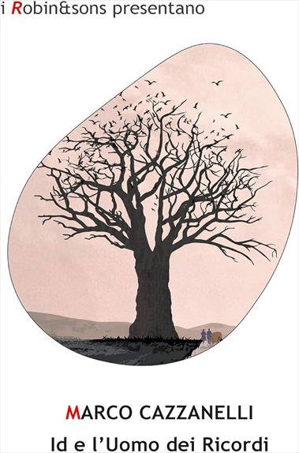
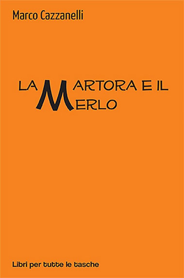
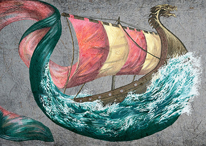
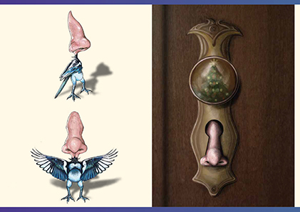
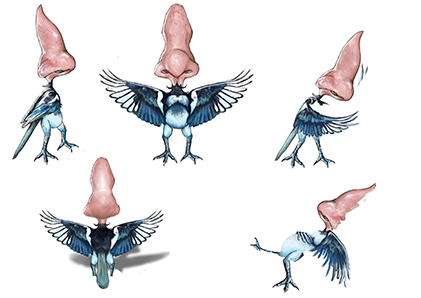

Introduzione
Ciao!
Quella che segue è una pagina di prova, realizzata come esercizio per il corso di Linguaggi
Multimediali.Per renderla più credibile ho deciso di inserire come testo parte di una lettera motivazionale di
presentazione, come media alcune illustrazioni, animazioni e lavori da me realizzati nel corso dei miei
percorsi di studio. read more
Mi presento, sono Anna Cazzanelli amo da sempre disegnare e sogno di diventare illustratrice per l'infanzia. Ho conseguito il diploma di maturità presso il Liceo Artistico A.Vittoria di Trento indirizzo arti figurative. I cinque anni di scuola mi hanno permesso di apprendere le basi teoriche e acquisire le principali tecniche grafico pittoriche e di stampa. Successivamente ho proseguito gli studi presso l Accademia di Belle Arti di Verona seguendo il corso triennale di Nuove Tecnologie dell Arte. Durante questi tre anni ho potuto approfondire il mondo dell arte digitale: fumetto, illustrazione, elaborazione digitale, sceneggiatura per videogiochi, video editing, modellazione e animazione 3D. Inoltre, grazie ai numerosi progetti che ci venivano assegnati settimanalmente in ogni disciplina,spesso da realizzare in gruppo, ho sviluppato ottime capacità di problem solving e di collaborazione positiva in team.
Pubblicazioni
Id e l'uomo dei ricordi
Nel 2019 ho collaborato con la casa editrice Robin Edizioni per la realizzazione della copertina di questo libro
La martora e il merlo
Nel 2022 come progetto pratico di tesi ho realizzato il corredo iconografico di questo libro, pubblicato dalla Robin Edizioni nel febbraio dello stesso anno.
Illustrazioni
Ecco alcune delle illustrazioni che ho realizzato, alcune a mano altre in digitale


